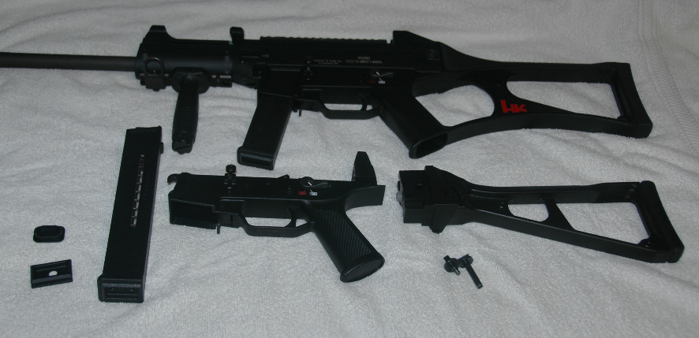
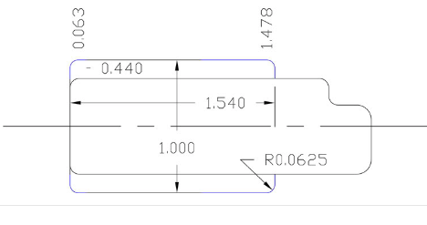
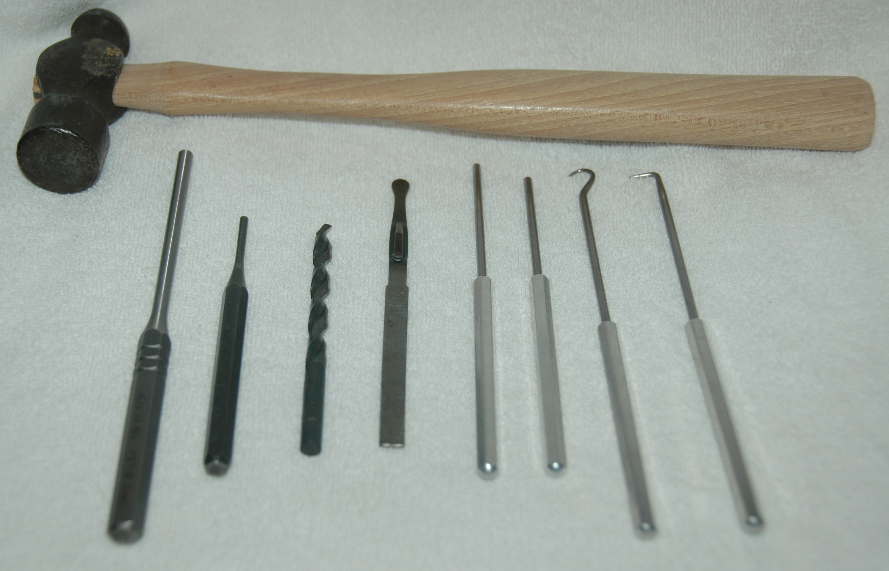

Copyright © 1988-2015 by
Abbott Analytical Products. All Rights Reserved.
USC to UMP Conversion Project
Cost: $1164.54 as of 11/2012 less standard HK USC

Actual Items
- Stock, German
- Stock Axial Pin
- UMP FBI Lower
- UMP Magazine 2 each
- Compliance Parts
- Stock Block B
- Floor Plate and follower set 2 each
- Trigger US
Useful: URL sites:
UMP Magazine Cutout

Source
HkPro.com Forum item. Scroll down the thread to the second post for the exact dialogue.
Your results may vary. But keep the left front centerline fixed. The back 1.540 may need to be shaved to 1.541 or a bit more. Insure the corners are rounded. This is not something you should consider doing with a hand tool. We recommend using a CNC router or machine shop with a good xy table milling machine.
The following tools are recommended:

- Sears Probe Tools with at least two modified to approximately 6 inches or a suitable lenght to support your comfort/safety level.
- Drill press or suitable substitute plus appropriate holding fixturing.
- Drill bit 17/64 for routing the polycarbon lower hinge tab.
- Center punch 1/8. Used to pop the multiple axle pins of the lower housing.
- Roll pin punch 7/32. Used to pop the barrel roll pin
- Points file or suitable substitute.
- Small craft hammer.
- A digital camera used to quickly document how something looks just before your start to "tear-into-it".
- A CNC router or milling machine with an xy-table (or access to a vendor) for making the UMP magazine cutout.
Please send comments or questions using e-mail
. (Last update: March 21, 2015 bolo)

{kind=link}
{kind=link}
{kind=link}
{kind=link}
{kind=link}